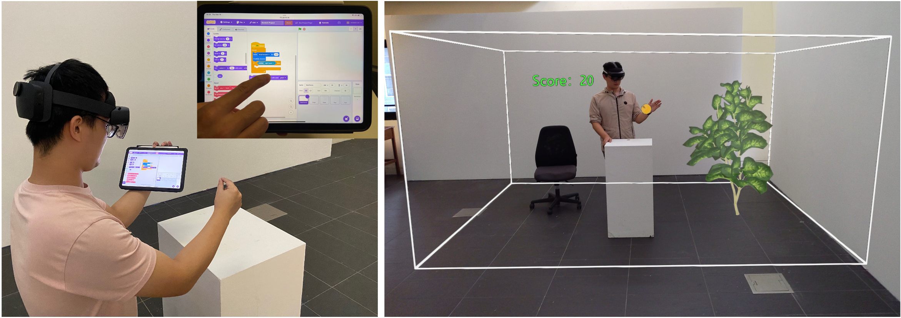
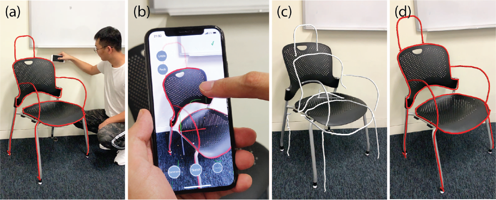
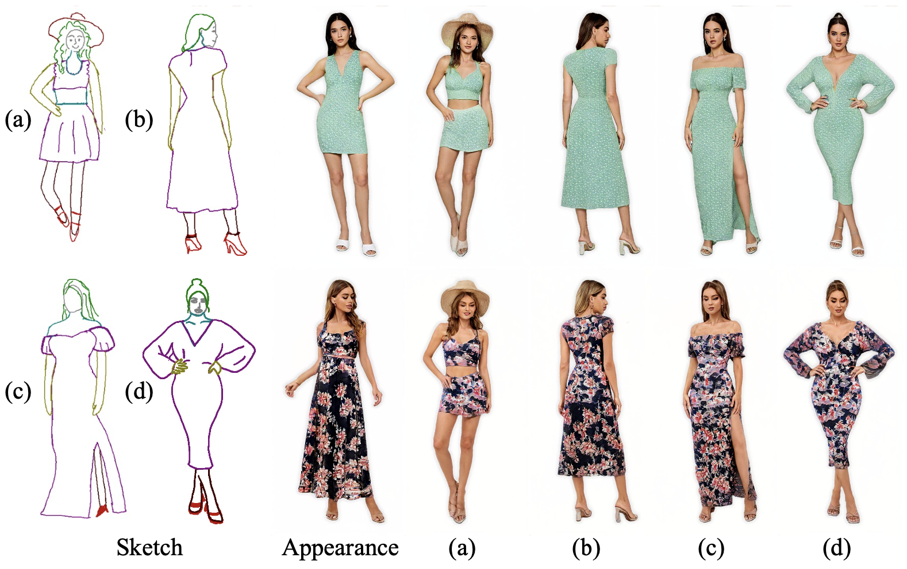

I am an RGC Postdoctoral Fellow at the Hong Kong University of Science and Technology (HKUST). I obtained my PhD degree from the School of Creative Media, City University of Hong Kong (CityUHK), under the supervision of Prof. Hongbo Fu. Before I came to CityUHK, I received a BA in communication and a minor in computer science and technology from the University of Science and Technology of China (USTC), with Guo Moruo Scholarship honored.
My research interests lie in the intersection of Human-Computer Interaction (HCI) and Computer Graphics (CG). Specifically, I focus on exploring novel interactive techniques, tools, interfaces for digital content creation and interaction design using emerging technologies (e.g, Augmented Reality, Generative AI).
I closely collaborate with Prof. Karan Singh, Prof. Pengfei Xu, and Prof. Kin Chung Kwan .
Address: Level 4, Academic Building, HKUST, Clear Water Bay, Hong Kong SAR
Email: huiyehy[at]outlook[dot]com
[Google Scholar] [LinkedIn]
Publications
* indicates equal contribution, † indicates corresponding author.

ProInterAR: A Visual Programming Platform for Creating Immersive AR Interactions (CHI 2024)
Hui Ye*, Jiaye Leng*, Pengfei Xu, Karan Singh, and Hongbo Fu†. In Proceedings of the 2024 CHI Conference on Human Factors in Computing Systems. ACM, 2024.
[Paper]
[Video]
[Preview]
[Supplemental]

ProObjAR: Prototyping Spatially-aware Interactions of Smart Objects with AR-HMD (CHI 2023)
Hui Ye, Jiaye Leng, Chufeng Xiao, Lili Wang, and Hongbo Fu†. In Proceedings of the 2023 CHI Conference on Human Factors in Computing Systems. ACM, 2023.
[Paper]
[Video]
[Preview]

ProGesAR: Mobile AR Prototyping for Proxemic and Gestural Interactions with Real-world IoT Enhanced Spaces (CHI 2022)
Hui Ye and Hongbo Fu†. In Proceedings of the 2022 CHI Conference on Human Factors in Computing Systems. ACM, 2022.
[Paper][Video]

ARAnimator: In-situ Character Animation in Mobile AR with User-defined Motion Gestures (SIGGRAPH 2020)
Hui Ye*, Kin Chung Kwan*, Wanchao Su, and Hongbo Fu†. ACM Transactions on Graphics (TOG): Special Issue for ACM SIGGRAPH 2020. ACM, 2020.
[Paper][Video]

3D Curve Creation on and around Physical Objects with Mobile AR (TVCG)
Hui Ye, Kin Chung Kwan, and Hongbo Fu†. IEEE Transactions on Visualization and Computer Graphics. IEEE, 2021.
[Paper][Video]

Predict-and-Drive: Avatar Motion Adaption in Room-Scale Augmented Reality Telepresence with Heterogeneous Spaces (TVCG)
Xuanyu Wang, Hui Ye, Christian Sandor, Weizhan Zhang†, and Hongbo Fu†. IEEE Transactions on Visualization and Computer Graphics (TVCG): Special Issue for IEEE ISMAR 2022. IEEE, 2022.
[Paper][Video]

DrawingInStyles: Portrait Image Generation and Editing with Spatially Conditioned StyleGAN (TVCG)
Wanchao Su, Hui Ye, Shu-Yu Chen, Lin Gao, and Hongbo Fu†.
IEEE Transactions on Visualization and Computer Graphics (TVCG). IEEE, 2022.
[Paper][Video]

Sketch2Human: Deep Human Generation with Disentangled Geometry and Appearance Control (TVCG)
Linzi Qu, Jiaxiang Shang, Hui Ye, Xiaoguang Han, and Hongbo Fu†.
IEEE Transactions on Visualization and Computer Graphics (TVCG). IEEE, 2024.
[Paper][Video]
Invited Talks
3D Content and Interaction Prototyping with Mobile AR
[2024-10] Invited Speaker, Technical Colloquium: Academic Rising Stars Forum, Chinagraph 2024 [Program]
ProInterAR: A Visual Programming Platform for Creating Immersive AR Interactions
[2024-05] Conference Paper Presenter, CHI 2024 [Presentation]
ProObjAR: Prototyping Spatially-aware Interactions of Smart Objects with AR-HMD
[2023-05] Conference Paper Presenter, CHI 2023 [Presentation]
From Communication to Computer Graphics
[2022-08] Student Colloquium, CAD&CG 2022+2023
ProGesAR: Mobile AR Prototyping for Proxemic and Gestural Interactions with Real-world IoT Enhanced Spaces
[2022-05] Conference Paper Presenter, CHI 2022 [Presentation]
Mobile AR Prototyping for Proxemic and Gestural Interactions
[2022-04] EAA Youth Academic Forum, Tianjin Fine Arts Institute [Post]
Exploring Novel Mobile AR Prototyping Techniques and Tools for 3D Contents and Interactions
[2021-12] SIGGRAPH Thesis Fast Forward [Video]
ARAnimator: In-situ Character Animation in Mobile AR with User-defined Motion Gestures
[2021-09] Graphics And Mixed Environment Symposium (GAMES) [Post] [PDF][Video]
[2020-10] SCM|ACIM Colloquium, CityUHK
[2020-08] Conference Paper Presenter, SIGGRAPH 2020
3D Curve Creation on and around Physical Objects with Mobile AR
[2021-03] IEEE VR 2021
In-situ 3D Content Creation in Mobile AR
[2021-03] Affiliated Forum on Human, Technology and Future of IWHEC 2021 [Post]
Seleted Honors & Awards & Grants
Load More...
Professional Services
Organizing Committee
Organization Co-Chair of CVM 2025, Media Design Chair of CGI 2025
Session Chair
CHI 2024 Session on Immersive Experiences: Creating and Communicating
Associate Chair
CSCW 2023/24, CHI Late-Breaking Work 2023/24
Program Committee Member
Expressive 2025, Pacific Graphics 2024, SIGGRAPH Asia 2024 Emerging Technologies, UbiComp/ISWC 2024 Notes and Briefs
Paper Reviewer
Special Recognition for Outstanding Reviews of CHI (2022/23/25), CSCW (2023), MobileHCI (2022)
Conference: CHI 2020-25, CSCW 2023/24, UIST 2022/2024, SIGGRAPH 2024, SIGGRAPH Asia 2022/23, PG 2020/23, MobileHCI 2022, IEEE VR 2021, IEEE AIVR 2021
Journal: ACM TOG 2024, IEEE TVCG 2022, IEEE TMC 2024/25, IEEE C&G 2023, IEEE CG&A 2023, The Visual Computer 2023
Student Helper
PG 2018

{kind=link}
{kind=link}
{kind=link}